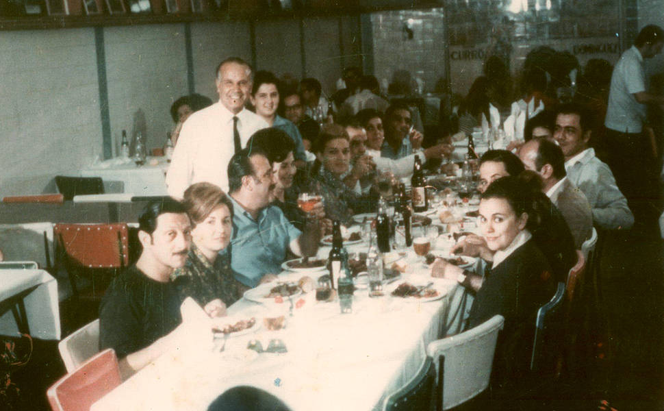

História
Fundada em 2020, nossa empresa surgiu da paixão pela culinária e do desejo de compartilhar experiências gastronômicas. Com o crescimento da vida digital, percebemos a necessidade de um espaço que unisse receitas acessíveis e inspiradoras, permitindo que pessoas de todas as idades e habilidades se aventurassem na cozinha. Desde então, temos trabalhado para criar uma comunidade em torno da comida, onde cada prato conta uma história.
Missão,visão e valores
- Missão: Democratizar a culinária, tornando o ato de cozinhar uma experiência prazerosa e acessível, inspirando pessoas a explorar novos sabores e criar memórias em torno da comida.
- Visão: Ser a principal referência em receitas e dicas de culinária online, reconhecida pela qualidade, diversidade e capacidade de conectar pessoas por meio da gastronomia.
- Valores:
- Acessibilidade: Tornar a culinária acessível a todos, independentemente da experiência.
- Criatividade: Incentivar a experimentação e a inovação na cozinha.
- Comunidade: Fomentar um ambiente de troca de experiências e aprendizados.
- Sustentabilidade: Promover o uso de ingredientes locais e práticas culinárias conscientes.
- Paixão: Celebrar o amor pela comida e pela cultura gastronômica.
O que oferecemos?
Oferecemos uma ampla gama de receitas, categorizadas para facilitar a busca:
- Receitas diárias: Pratos rápidos e saudáveis para o cotidiano.
- Receitas festivas: Sugestões elaboradas para ocasiões especiais, como festas e reuniões familiares.
- Dicas de cozinha: Tutoriais e vídeos explicativos que ensinam técnicas e segredos para melhorar suas habilidades culinárias.
- Blog de culinária: Artigos sobre tendências gastronômicas, ingredientes especiais e a história por trás de pratos clássicos.